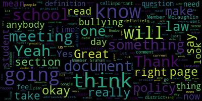
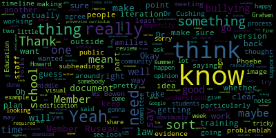
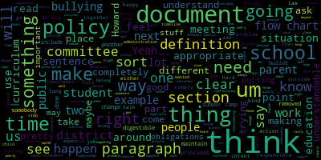
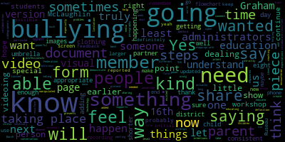

[hGxT3FthToQ_SPEAKER_02]: Hello, everyone. We'll be just a moment waiting for the other members. Hi everyone, sorry I'm late. It's okay. Just see here. just give member McLaughlin another moment. Let me send her a message. All right, just one more minute and then we'll get started. All right, I guess we should get going.
[Ruseau]: There never seems to be enough time. All right. Thank you, everyone. This is the Medford School Committee Subcommittee on Rules and Policy. for March 2nd, 2023 from 430 to 6pm. We will be discussing, well, let me read the whole notice. Please be advised that on Thursday, March 2nd, 2023 from 430 to 6pm, there will be a rules and policies subcommittee meeting held for remote participation via Zoom. The meeting can be viewed through Medford Community Media on Comcast channel 15 and Verizon channel 45 at 430pm. Since the meeting will be held remotely, participants can log in or call by using the following link or call in number. The Zoom link is https://nps02155-org.zoom.us/.j98476751202. Meeting ID if you'd like to call in is 984-765-1202 and you could call the number 301-715-8592. Additionally, questions or comments can be submitted during the meeting by emailing me PR US EA you at Medford k 12 ma us, please include your first and last name, your metric street address and your question or comment. The agenda for today is as approved by the full school committee on January 24 2022. The Rules and Policies Subcommittee will review the Bullying Prevention and Intervention Plan for recommended updates. This meeting is a continuation of our meeting held on December 6th. I will take the roll.
[hGxT3FthToQ_SPEAKER_02]: Member Graham? Here. I don't see her yet.
[Ruseau]: And member Ruseau here, two present, we have a quorum. So for those that were not on the last meeting, we went and discussed at a high level the current bullying prevention and intervention plan, which is on our website. We quickly realized that the content of the plan itself is not actually A big problem. The actual document is 38 pages and is a pretty big problem. There's duplication and there's sections of it that read sort of like minutes. It's a very odd document. Seems like a stream of consciousness that ended up being published as the policy. So I reached out to the attorney general's office to ask if there was a way we could work on this Google document in any fashion other than going through it in the meeting line by line. Because it's 38 pages, that is a painful proposition. And the answer from them was pretty direct. I will read from you just a couple sentences. The open meeting law does not carve out an exemption to the definition of deliberation for discussions that do not result in a decision or a vote. Any communication among a quorum of a public body on matters that are pending or will come before it and within the public body's jurisdiction is considered deliberation. Additionally, it says later on, public body members should not work on a shared document except for during a properly noticed meeting that is open to the public. non-substantive edits like proofreading for typos would be okay, but reworking a policy that would be considered deliberations. And then the person that responded, Assistant Attorney General Benedin, says, we are aware of the inefficiencies that can result from this limitation. It's close to an apology for what the law says, I think, is we're going to get. I'm going to, if this makes sense to Member Graham, I'm going to share the current policy and then we're going to go page by page through it, which hopefully there'll be sections we can move quickly through.
[hGxT3FthToQ_SPEAKER_02]: Does that sound okay, Member Graham? Yeah, okay, great. Yes. Thank you. Let me get the sharing going. That's the one button I can never find is share. It's, there it is. It's the one that's green, meant to make it obvious, but has the opposite effect with me. All right. Do folks see that? Good. Now let me, thankfully I have a big screen, but I have to make some adjustments. There we go. Hello, Member McLaughlin.
[Ruseau]: And I just want to note that you are present.
[SPEAKER_09]: Hello. Thank you.
[Ruseau]: Hello. So we're going to go through this. I just read the Attorney General's response, which said that I can't share a document with anybody, unfortunately. And we're going to have to go through this in this posted meeting. So this is the current document that's on our website. And you can tell that it has the approval date from 2010, which I'm guessing is when the law was passed. As I said in the last meeting, unfortunately, the name of the actual policy is written into the law. Typically, school committees are not writing implementation plans. That is pretty explicitly not what we're supposed to be doing. But in this case, the law is very, very clear that that's what this document is called. I, let's see. So I'm not gonna go through the table of contents, because that will update automatically. So this is the current document. I've gone through and started to do some suggested modifications. Let me increase this. Is this tiny for everybody or is it okay? I'm good. Okay, thank you. I never know the answer to that. So some of this document is written in a way that very much feels like the law just passed and we're going to tell you about the law. It's now been 13 years and so some of the language doesn't seem to make a lot of sense. There's also an awful lot of change management kind of language in here. They know this talks if we looked at that before I said to cut that, the new state anti-bullying law, I mean, it's not new, saying that we must have this. It was revised in October, 2011. The following guidelines were revised in 2014, and most recently in November of 2020. So when I look at this document, I think about what's the purpose of this document. And what do we want this document to do? One of the most important things for any kind of policy is that it's actually something the people that should know it can read. 38 pages is problematic in that regard. And so does anybody who needs to read the current policy need to know the full history of it? I think the answer is probably no. So I recommended that we cut this and I will just keep going and if the members feel like, or if anybody feels like, no, this really is something we need to keep in there, please just raise your hands or speak up because I might miss your hand. So I'm not going to read every line. This one here, there's this is a is violations policy for any student to engage in bullying or cyber bullying at a location activity function or program that is not school related. or through the use of technology or electronic device that is not owned, leased, or used by the school district. If the bullying creates a hostile environment at school, or the victim infringes on the rights of the victim at school, or materially or substantially disrupts the education process or just orderly operation of the schools as determined by the school. I'm not suggesting we cut this. I actually think this is probably part of what the law was aimed at. my question, you know, we write the policy and then the district has to implement it. When I read this, I get really like, you know, I think there was a case at the Supreme Court just within the last couple of years about a student who had said something on TikTok or Instagram or something. And then the district punished her and it was completely outside of school. I think it was in the summer even. And so my question, just how on earth are we monitoring stuff that's happening outside of school and making this determination? And I realized my comments are really tiny. So let me zoom and hopefully you can see that, but how do we determine this? It feels a bit like we're just sending me the arbiters of behavior of students 24 seven and it, I don't think the intent is a problem. I just think, how on earth does this get implemented? Member McLaughlin.
[McLaughlin]: Can you zoom back out again so I can see it? I'm sorry, yes. Thank you. Yeah, I mean, just having worked with a number of folks who have been through this process, and it's just so abstract, as I'm sure you can imagine, particularly with social media, it can be really, you know, tricky. And I think that the way the, what I've seen and experienced is the way that these things get handled, you know, sometimes well, and sometimes maybe it could have been done better is through reporting from usually, you know, the victim or the victim's family, particularly around things that are outside of school. And it is, In my opinion, and was the intent of the law, in my opinion, that this is addressed in and outside of school, particularly because, oh my God, I'm forgetting Phoebe's name. What was Phoebe? You know, the girl from Hopkinton that a lot of this law was created by, if anybody remembers. Phoebe Prince, South Hadley. Thank you. Yeah, South Hadley. Thank you, Phoebe Prince, that so much of this law was created for her, you know, that that was the problem is that she was, you know, obviously, one of the problems is that she was being bullied 24 seven, you know, through all kinds of, you know, means. And so I think that that was one of the reasons that it was addressed. But I think that, in my opinion, one of the things is that families need families and students and obviously staff need to be Educated and informed around this to understand that that is the policy and that it can and should be reported outside of school, you know, in you I think you had an example of what about if they're at summer camp and they have a bullying situation do we get the call and go to work to deal with this. In the middle of July, when the students aren't even available to us for interactions, I would say yes, I mean I think that. we have to figure out some of that, well, particularly maybe when it, I would defer to Maurice about, you know, whether it's, you know, that summer and we're convening people to deal with it over the summer, or if we're getting the notification and we're making a plan for when the students are returning in September, I'm not really sure, but the notification I would think can and should happen in July. And so there needs to be a process for that because it does extend to outside of our school. So that's my two cents, thanks.
[Ruseau]: Thank you. I would like to hear from the folks that would have to deal with it, which I presume is the principals, like, I mean, we won't get into the edge case of a student who's a rising ninth grader. So there's no, you know, the principal at the high school does not have any relationship. The principal at the middle school is, I don't know when their responsibility ends, but I assume the last day of school of June. That edge case I think is complicated, but you know, you know, July 18th, you're maybe taking a vacation and there's a report, whether it's through the new reporting system we have, do you all believe that it is your responsibility and expectation that you will swing into action to do whatever you do if it happened during a school day in a regular normal week of the school year?
[hGxT3FthToQ_SPEAKER_02]: Member Graham. Thank you. I think
[Graham]: I totally understand the spirit of what this paragraph is trying to accomplish. I think it's rather poorly worded and confusing. So I think there is a difference between how things that happen outside of school impact students during school in the building and who is responsible for taking action for discreetly things that happen outside of the school. And I think this paragraph is worded in such a way that those two things are like completely muddled together. But I think like in your summer camp example, like if there was a situation at summer camp, like the school district would not supersede, right? Like the activity and the responsibility of the summer camp simply because the two students happened to be students that met for public schools or not. And to the extent that that issue was like handled and resolved during the summer at summer camp or wherever they are, that would sort of be outside the sort of fringe of school. But if there's something that starts in summer and makes its way into the building such that it is like infringing on a student's rights, to an education, that's different. So I feel like this paragraph is poorly worded because it like muddies the water and makes it sound like the school is the arbiter of literally every possible bullying situation that an individual might come in contact with simply because they go to Medford public schools. I don't think that's the intent of the paragraph, but I think that was certainly how I read it the first time and I was sort of taken aback. So I think there's some rewording there that would clarify those boundaries in some way. And maybe at some point in the policy, there need to be some examples that would make that clear for people so people understand. But I think that was my read of this paragraph was just that the paragraph simply needs work. It's a pretty, And I think this is a criticism of the document in general. Like that's a very long, complicated sentence. That's one sentence. And it's full of like qualifiers and commas and all kinds of things. Like, so that's only one sentence. It's like the length of a paragraph. Like it's far too complex to be understandable. And I think the point of all of our policy should be to be clear and understandable. So I think that's a big part of the problem that I have with this particular sentence.
[Ruseau]: Thank you. Member McLaughlin, is your hand up again or you just had to put it down?
[McLaughlin]: It is up again. Okay, go ahead. I guess first I wanted to ask, you know, if Howard's here or whether, you know, Howard is going to be here at some point for things, because I think that we could, you know, I mean, I think that's part of what the law is. It's always so debatable and whether we're interpreting the law the correct way for this and all of those things. I think it makes these, a lot of these things really sort of ambiguous and I'm not sure that it's really our role to try to figure some of it out. And so that's a little bit concerning for me. And then the other concern is just as an example that you had member Rizzo a few minutes ago about, you know, and I know you said that, you know, sort of the fringe moving from one school to another, you know, one, you know, middle school to high school or something like that. is sort of outside of the scope. And I would actually beg to differ. I mean, we actually had a personal experience that I will share that, you know, where there was some middle school bullying and, you know, we're encouraged, this was a long time ago, so I don't want people to think that it's anybody that is currently within our schools. But we were encouraged to not file a report, and instead to allow, you know, administration to notify each other of the situation so that know incoming administration would be aware to keep an eye out to make sure that this wasn't happening at you know another school or what have you and that's part of the problem is that if there's not and it didn't happen but that's part of the problem is if there's not communication between one school to another when kids are transitioning that can be terribly problematic so I don't know that that was necessarily a good example and I'm just saying that for edification really of the public, I guess, in terms of how these can be really tricky. And I think our role here, if I understand correctly, is that we want to try to be clear and succinct with what our policy is. And I think that there also has to be some legal review or something of it, because I don't think that we are in a position to interpret the law.
[Ruseau]: Thank you. Yeah, I agree. We definitely, that's a great idea to get Howard in here or I can send him questions after of the things that we identify because I think that that's really important. Member Graham.
[Graham]: Yeah, I guess this document is enough of a mess that it would be a pretty egregious use of taxpayer dollars to ask Howard to clean this up in its current state. So I do think we need his, like his eye and his lens on this, but I think there's. A considerable amount of work to do before, um, we get to the point where that's a good use of his time and our money for him to, to do that. Like, you know, for example, there's three places where there are definitions in this document, like that, that can't be, there needs to be one place where all the definitions exist. So I think there is like a first pass we need to take through this and then bring Howard in for the like more legal spin and making sure that the intent of the law is being carried out in this policy. But I think there is like a lot of work that we can do before we're going to be at a stopping point to bring Howard into the mix.
[Ruseau]: Yes, I agree we plenty we can do. I'm actually literally going to put notes of ask Howard, when we think that there is a situation like that rather than saying Howard here's 38 pages and pretending that that won't cost us anything. Yeah, remember McLaughlin.
[McLaughlin]: Yeah, thanks know to be clear that's not what I'm suggesting, but I am suggesting that I would like to keep draft of the document with all edits recorded and you know maybe we're doing save as so we have versions or something but my concern is because we don't know, you know, I mean, I'm sure that there are some things here that are pretty obvious, whether if there's repeated information, it's pretty clear it doesn't need to be repeated, those sorts of things. But if there are things that we are making a decision that, oh, we think we can omit, but we don't, in fact, really know that, then how do we really know that is what I'm saying. So I guess I would say agreed. I think there's work that we can do here before it goes to an attorney. I also think that we need to keep versions and records of what our edits were so that it is really clear or just keep again the comments and the strikeouts and what have you if we want to do that, but to be clear, so that whoever is looking at it can see what the process and what some of the work was because I think that there may be instances where we could, and this is why I think an attorney needs to look at it primarily, where we could be thinking we're doing something that is appropriate when we're not.
[Ruseau]: Yeah, before the meeting, I had reached out to a couple of friends about when KP Law reviews ordinances, the document that is being reviewed by the council has the strikes and the edits and the public watching the meeting can literally follow along with how the ordinance is going to change. And that's fabulous. Unfortunately, Google, isn't Word. Word, I think, gives you all those features, and I noticed that even KP Lab was not using Google, they were using Word. But saving versions of our S as we go will definitely solve that, and not clicking the checkbox so everything disappears. Were there any administrators that wanted to comment on this issue of, A, how does it actually happen now in the two different scenarios? The one, let's just be simplistic and say the middle of the summer, but also the transition between middle and high school, for instance. Like how does that kind of thing happen now or does it happen now? Or is your understanding of your responsibilities under the law
[hGxT3FthToQ_SPEAKER_02]: How do you see those things? Mr. Tucci. Hi there, good afternoon.
[Tucci]: What I would say in terms of my comments. would be that certainly if there is a situation on social media that we become aware of, it is very, very hard to police all the happenings on social media. But oftentimes we have relationships with our students where we do receive these tips that we have to follow up on. And oftentimes we will encourage our students to capture a concerning interaction they might have or might have viewed on social media by capturing it with a screenshot. And then they tell and report it to a trusted adult. And if something like this is brought to our attention, you know, certainly what we would do is we would, you know, kind of investigated try to learn a little bit more about what's behind it. And if we make that determination that it is substantially disrupting the educational process or operations of the school. That's where we have the legal grounds is my understanding from a. litigious standpoint to be able to potentially act upon that and even assign consequences and progress down potential areas where maybe it's a cyber bullying or bullying type of matter. So I'm not sure if that exactly gets to the point of your question, but I feel like I can respond in that sense. I'm happy to take any follow-up questions you might have.
[Ruseau]: Thank you. That's helpful.
[D'Alleva]: I should delay that. Yeah, thank you. I think I have to obviously I think Nick put it in the same perspective as I would put it in. I know we do try. I don't know how successful all the time it is but we do try to discuss transitions from eighth grade to ninth grade of things that have been noted. For example, you know things that maybe Nick has noted that he's seen that he would bring to our attention, moving forward from things sometimes not always bullying sometimes conflicts between students. One thing that I have been noticing a little bit of noticing here that. Things are happening online, even on gaming. I've been dealing with a lot of verbal back and forth when kids are on video games, back and forth, and it becomes more of a serious conflict. But again, where that lines and where we figure those things out is dependent of that information coming to us and then determining what we go from there. But again, a lot of what Nick said, I would definitely echo.
[hGxT3FthToQ_SPEAKER_02]: Thank you. Dr. Cushing?
[Cushing]: Yes, I think that this section, so a lot of this is boilerplate from the original publication done back in the early 2010s. And so I just did a quick look up and found another school district where it's essentially the exact same. So I think a lot of this is boilerplate that was pushed out. That doesn't mean it can't be changed, but I will say that So bullying, we have to give due process to all parties involved under the 14th Amendment. And over the summer, a school being involved over the summer is a very challenging situation to be able to really The school is there to support and to do whatever is possible, but generally speaking, it's looked at, at least in my experience, it's looked at from the start of school to the end of school. And then as was mentioned previously, if there's carryover from the summer, that's obviously things that need to be addressed, but that presents a significant challenge for school leaders to be able to have all the evidence.
[Ruseau]: Great, thank you, I appreciate that. We should just keep moving since we have 36 more pages. I put a note in here when I first read this about not tolerating retaliation, I kind of feel like maybe I don't need to say that. I would just get rid of my own comment unless somebody feels that this needs to be more verbose, but not tolerating retaliation against a person that does mean anybody, so students, staff, anybody within our jurisdiction. So I don't know that we need to make that more complicated. And I appreciate, Dr. Cushing, that you found that there's a boilerplate. A lot of times what happens is the law is passed and then our professional association will typically draft for substantial things, they will draft boilerplate. Sometimes DESE does it themselves, and this may have come from DESE, but they will draft a boilerplate since they know every district has to adopt it. And, you know, as I spend more time in the policy manual looking at other districts, it's shocking how many districts have exactly the same language for policy. It's not shocking, it makes sense. So it's not that somebody sat around in Medford and wrote this document. I don't think that that happened. Dr. Cushing?
[Cushing]: Yeah, and just so everyone's aware, the edits and updates that were made two years ago were definitely not as in-depth as these, which I think the policy definitely needs. It was more focused on making sure the forms were functional, and really allowed for principals to have an ability to use forms that would really be beneficial. And then the second part is to update because there was an update to the law, I believe it was around 2014, that expanded who could be considered a bully as well as some other provisos. So two years ago or so when we looked at this, those were the primary functions of that review.
[Ruseau]: Thank you. Yes, I remember that. So going through this, this is something I thought we should add, is a definition of cyberbullying. And while electronic communication sort of covers everything, given the past several months, I felt it was important to explicitly call out video, which I think has become a very harmful way of bullying, a seemingly passive way of bullying. But I look forward to the day when we can say that the policy is students taking videos of a kid getting beat up and sharing it with their 1200 classmates, that that's bullying, that that's a disciplinary action, a very substantial one. Because when I hear about students who have been beat up, and then I hear about students who perhaps attempted suicide, was it because they got beat up or was it because 1,400 other people in their school got to watch it? I'm not that person, I don't know, but it seems reasonable to conclude that it is the video sharing. It is the humiliation, widespread humiliation and video that's forever. I mean, getting beat up is never good. That's a problem. By having a video of it for the rest of your life, for your kids, your grandkids, your great grandkids, I mean, this stuff's never going away. That's probably the bigger harm. Um, the long-term harm. So I think, um, finding a way for us to get explicit on this particular topic is important to me. Remember Graham.
[Graham]: Yeah. Thank you. Um, I was going to ask that there be a section for definitions that includes bullying and cyber bullying and whatever this met for public school paragraph is at the bottom probably is a different topic, but there also are definitions on page 19. And on page 26, and I didn't look to see if they are in conflict with each other, but I think they all like definitions need to be in one place, either right here or at the back of the document. Um, because right now they're just like scattered all over the document and the same words are being used again and again and again. So I'd like to see us on those other definitions up here as well. And just make a section about. definitions to consolidate that and make it a little bit more cohesive.
[hGxT3FthToQ_SPEAKER_02]: Great. Dr. K?
[Kathleen Kay]: So I just wondered if maybe the word social media should be mentioned somewhere in regard to this. I know that it says apps you added the word apps, but we just had a case recently that came across our door of kids who were being mean to each other on Snapchat and complicated thing with Snapchat is it goes away. And so luckily for us, the child took a screenshot when she reported to her teacher that she was being bullied. But those things are happening all the time. And that makes it just all the more complicated for us to follow up and get to the bottom of it, because these things are happening at home. So I just wondered if in the definition somewhere, maybe it states that word as well.
[Ruseau]: Great.
[Kathleen Kay]: Thank you.
[Ruseau]: That's right. I missed that. That one's such an obvious one too.
[hGxT3FthToQ_SPEAKER_02]: Thank you. Dr. Edward-Pinson. You're muted.
[Edouard-Vincent]: No, I just had wanted to comment a little earlier when you had added the definition with the other pieces about video and what the other administrators were sharing and saying that first it was bullying and now we're dealing with the cyber bullying and This is truly a problem, but there's also like a limitation because when you think about bullying, it's about someone wanting to show power. They want to be the powerful one and take advantage of someone else in that particular point in time. And so technology and media or videoing is now being manipulated in such a way that whoever the videographers are or the person who's actually doing the bullying, they feel empowered by that and I just feel like it's As we create this and kind of say what our expectations are, I think there's so much about education that needs to happen. And member McLaughlin, I hope she will share, but there is going to be something taking place next week on March 9th about bullying with our, special education, I want to be able to say it the right way, but Medford's going to be doing a bullying workshop and it's about what parents and professionals need to know is the title of the workshop and it's being done in collaboration with the Federation for Children with Special Needs and I just feel like We need to continue to educate demonstrate and show our students that are in front of us what is appropriate and what is inappropriate. And I just wanted to add that piece to the conversation because there were some things you know we can have the best intentions, but if someone truly has malicious intent. You know, we need to be able to say that this is wrong, and also get that person the necessary help that is needed. And I just kind of feel like bullying has existed for a long time but the way in which it presents itself now. with these videos getting liked and I don't know how people do it, but they resurface it, they share it with different people, they do the airdrops, you know, the images, students taking images of themselves. with limited clothing or no clothing. And it's, it is a form of bullying and sometimes it ends up classified as child pornography. And so I'm just saying that these are the things that the administrators, especially at the secondary level 612 world have to deal with. on a consistent or not a consistent day, but at least they've encountered it enough times. And I just feel that the education, educating parents, helping parents to become partners with the district, for them to understand, like, when we're reaching out to you to say that this is what's taking place, we truly do need them to partner and collaborate with us. get the appropriate supports their child needs. And sometimes the cell umbrella I just, I can't stress it enough because it's something that we're all dealing with and we shouldn't pretend that it's not happening.
[Ruseau]: Yes, thank you. Member McLaughlin.
[McLaughlin]: Thank you. Yeah, no, I just wanted to add for the for the presentation on the ninth, it is the Federation for children with special needs that is doing it full disclosure I work for them I don't do the presentation, I just know about it. But it's also contracted through DC, so the Federation is contracted to Department of Education to provide this training so it's not. specific to just children with disabilities. It's not specific to just families. It's also caregivers, guardians, foster families, and staff and others. And I think it's a really good opportunity. It's virtual. We will see if it can be recorded potentially for people if they need the link shared. If they're not able to make it, there's a registration link that I did share. and a flyer. I know CPAC and the district are working together to get this flyer out to the community and the superintendent will be getting information out as well. So thank you for that. But I do think that there's so many nuances and so many pieces that are really tricky. And as Maurice was just saying a moment ago, I was actually talking with somebody just last week specifically about the child pornography issue, because it's not just an issue for the person that creates it if somebody forwards that image they're, they're considered complicit, I mean, it gets really messy and can get really troubling with law enforcement I'm on the, I'm also on the board of an organization called mass kids which is about. child abuse prevention. So I know some of those things around that and it just can get really messy. And so I think training for everybody is a really, really, really good point. And hopefully people will come on the night that it won't be the only training that exists, but I just, I would second Dr. Ebay, thank you.
[Ruseau]: Member Graham, and then maybe we can move on.
[Graham]: Yeah, I'd like also to see us add a section to this document around the district's administrative obligations around education. So I think it's perfectly appropriate for us to set policy that says the district will do certain things. And we should have, and it should, there's stuff in here that's like a clear, like example of why doing that is like,
[hGxT3FthToQ_SPEAKER_02]: Member Graham, you are muted again, I don't know why. Sorry about that.
[Graham]: So I think there's some like clear examples in this document of why like sort of putting policy directives around what the district will do doesn't work. However, I do think like some sort of like annual obligations that the district has around education would be important provided that we can like craft it in a way that is not as prescriptive that it becomes useless, which I think most of this document sort of falls into. Um, but I think instead to say from a policy perspective, we will, uh, you know, at the beginning of the year, do X and on an annual basis, we'll do Y that kind of thing, I think would be appropriate somewhere in the document, um, to add a section because I didn't see. I didn't see that in here. Maybe it may just be scattered all about, but I didn't see anything about making this digestible for students and parents. Like this document is by definition, not digestible for anybody. And I think beyond having a document that's digestible, which I think we need to work to, I think the way you make documents digestible, as you talk about them, in a consistent way, and then you demonstrate that those things happen in a consistent way. So I think there is good reason to add something like that to the document. I'm happy to draft something before the next meeting, and you can share it and insert it at that time, but I'll leave that to the group.
[Ruseau]: Yeah, I mean, if you want to... And this goes for anybody, really. If you have something you think we should be inserting, please don't hesitate to bring some draft language. We can pop it on the screen and think about where it fits. And we are running fast on our time. But Dr. Everett-Vinson, if you have another thing to quickly say.
[Edouard-Vincent]: No, I just was going to let member Graham know as well. The shorter version, which is strictly the forms, is like an eight-page document. I think it's eight pages or six pages, which has the actual forms. So thank you. Thank you, member Rousseau. So I do know that there is repetition in this document, but there, at least based on what my understanding was, there was a certain amount of information that did need to be included. And so like the revision of member was so adding like videos and, you know, I'm not sure what the next technological advancements going to be but, you know, moving from phones there's probably going to be. you know, recording eyeglasses or something like that, where, you know, in the next five years, it's probably not even going to be the phone, it's going to be some other, maybe it's going to just be the watches that people are wearing, where there's still going to be video, videoing and recording what's happening, but it's, it's just going to be some new, updated electronic device. And, um, So I do feel like we will always be adding whatever the new things are, but I think people need to understand how wide, like the breadth of this topic. It, it, it really is expansive, everything that could fall under the umbrella of bullying. That was all I want. So I know this is the longer version, but people may opt to use the shorter version, which is, you know, the form packet, and then go to this one to kind of read the details.
[Ruseau]: Great, thank you. So I just want to get back to the language here so we can move along at least to the sections where we cut them out, because that will make us feel like we've done something by chopping whole sections out. But I certainly don't want to stifle conversation. This word here, intelligence, I don't even get it. Like, does anybody read this sentence and have any idea what on earth this is meant by this? I just can't make it make sense.
[McLaughlin]: I do, I think it's, you know, like FBI speak. I think it's just, you know, writing images on video data or intelligence of any nature. So intelligence could be like old style notes, right? Like anything that sort of is, that is evidence of bullying.
[Ruseau]: Okay. Does anybody mind if we get rid of it? It's just weird.
[Graham]: I feel like you could change it to information and it, would at least be understandable. I like that.
[McLaughlin]: Or evidence. I would say evidence. Data or evidence of any nature.
[Ruseau]: Evidence is fine. How about information or evidence? I like information, too. I don't know why that's not there. How about there?
[hGxT3FthToQ_SPEAKER_02]: OK.
[Ruseau]: And now you know what the right comment is in a list. All right. So definitely the social media edition. This paragraph here.
[McLaughlin]: I think we could probably lose facsimile, but that's just me.
[Ruseau]: Yeah, right? Where's that?
[McLaughlin]: That's after social media.
[Ruseau]: Oh, yeah. Do we still have fax machines, Dr. Edouard-Vincent? We do? All right. Well, I guess we'll leave them for now. I do. Okay. Sorry. Every time something requires one, I'm at a complete panic. Like, where do you even get one of these?
[Graham]: Just come to my house. In that paragraph where it says cyberbullying includes, and then it has all these like parenthetical, like one, two, three, like, can we not use that sort of nomenclature? Because I feel like it's really hard to read. Like, I think putting that in actual bullets would make much more sense, like cyberbullying includes, and then that's a bullet, there's another bullet. And then there's like another sentence that is, I think, another bullet that is just structured completely differently than all the rest. And some of this stuff we just probably are gonna need to clean up multiple times, but I think trying to make this stuff understandable is like its own body of work. And I think what we heard in the last meeting was like, if you could get through the document, it's sort of all here. And we actually have a bigger problem with doing the things that are in this document than we do with like having written the right things down on paper. And I have to attribute at least some of that to this document being so complicated to like read and internalize. So I think for our part, like we can commit to making this a more readable document. And so that for the part on the, the principals and the assistant principals and the administrators who need to do this, like that, they, that we've done our part to like make their job easier. Cause their job is already hard enough on this front without trying to like, sort of, we weighed knee deep through the language here.
[Ruseau]: Yeah, that makes a lot of sense, so.
[McLaughlin]: I think I would agree with that, Member Ruseau. I think that we all have ideas on ways to do that, and I think I know that Member Graham offered to sort of take a pass at that. I think that's a very good idea, not to have everybody doing this, but if Member Graham, because I know you like to organize things, if she's willing, as she had said earlier, taking a pass. I would just recommend, I mean, I'm sure you know how to clean up documents as I'm sure we all do, but I would also just recommend like the subheadings right making it really clear, you know, all the ways that we learned, you know, to write, what have you but, and I would also add and I know that I have talked to Dr. Cushing in Ms. Bowen about this, and I believe there is hopefully an iteration of it that we can include at some point, a visual. So there will be a visual for those who don't learn, who are neurodiverse potentially and don't learn with all of the text and the subheadings and the bullets and all those fun things. Anyway, that will have something that we can distill hopefully visually.
[Ruseau]: Yeah, definitely. So this thing here, I just feel like there was something I've heard that is far more up to date. But that's just why I added that comment. I feel like there's another word people are using these days to describe this, but it's not important right this second. The who to report to, yeah, again, like this paragraph is huge and it's so important and it could just be a simple one page workflow, a flowchart that anybody could understand versus this incredibly dense, I guess it's more than one paragraph. But my question was, do we expand this teacher or principal for who to report to, to include other people?
[hGxT3FthToQ_SPEAKER_02]: I don't, I mean, those are the people I think of, but like you could report it to a nurse or guidance Councilor or a member of Glockenburg.
[McLaughlin]: Thank you. You saw my tiny little hand raised. Sorry, I didn't actually do the hand raise. Thank you, member Rousseau. No, I'm backing up a little bit as we're looking at this though. And I'm asking, is there adoption of a bullying prevention curriculum? So probably about-
[Ruseau]: Two lines up. I will say, I don't know if we have one now, but I'm on the ECAT, the health education curriculum, whatever that long thing is. And we've made that front and center as something that we have to have bullying prevention as well as bystander training. So I don't know what we have now, but we will definitely have one. I believe Michigan model has some, but I don't think we were happy with it.
[McLaughlin]: And we can ask someone from the team in a second, if you don't mind, but I'm assuming that the, or maybe I shouldn't assume, are those HECAT meetings public or are their notes, they're not public. Are there minutes coming out of them? Like how, yeah, that's interesting. Cause how are we getting, will there be reporting out of that? How? Oh yeah. Okay. Yeah.
[Ruseau]: Yeah. We'll be reporting out.
[McLaughlin]: Yeah. And I'll check in with, maybe with Dr. Cushing in terms of what the schedule is, and I'd like to know sort of, you know, some of the agenda items as well, because I think it's important to know that that's on there. I guess I didn't realize that bullying prevention curriculum was gonna be.
[Ruseau]: Yeah, the heat cat covers, frankly, I was unaware, even though I'm, I mean, I volunteered to be on it. I did not understand that the heat cat covered. I mean, it just covers so much. It's really impressive.
[McLaughlin]: And just for the edification of, again, the public watching our folks that are on here that don't know what the HECAT is, Peter, would you mind, through the chair, Member Ruseau, if Dr. Cushing could just... It's the Health Education Curriculum Analysis Tool. And so a committee has been convened to, or not a committee, a group has been convened based on applications that were submitted and chosen to review that. Correct?
[hGxT3FthToQ_SPEAKER_02]: Correct. Yes. Yep. Thank you. Member Grant. Thanks.
[Graham]: Um, just one thing about the HECAT before we, like, move on that I want to make clear. That committee is not an advisory committee to the school committee. That committee was established by the superintendent who has the full purview of curriculum selection. So the fact that those meetings are not public and there are not minutes being published in the public are because the superintendent in her role is not subject to the open meeting law the same way that the school committee is. So there's nothing inappropriate going on that the superintendent absolutely has the full latitude to do exactly what she's doing and establish a committee. She happened to ask that the school committee have somebody participate, and that's member Rousseau. So I just wanted to like put that out there. I do think for this policy, like what's important is that as a matter of policy, that we will maintain and deliver high quality bullying prevention and bystander training, I think is the appropriate thing for this to say. I don't know what the rest of the paragraph says, but I think that's the appropriate thing from a policy perspective that belongs in here around the bullying. But we should stop short of naming a particular curriculum because the school committee does not have the authority to select curriculum and putting it in a policy document means we will surely be out of compliance at some point in time when the curriculum changes and we forget that it was in here. So I just wanted to, suggest that somewhere in this document in some iteration, we identify that that is a requirement of this policy, that it's our policy that the administration like maintain and deliver high quality curriculum, but that it doesn't have to be more like definitive or explicit or prescriptive than that because this is a policy document.
[McLaughlin]: I would agree. And I think that, you know, that it's providing the bullying prevention curriculum and bystander training. And then I would, you know, I would go, I would also suggest that that would not, would be to staff and families.
[hGxT3FthToQ_SPEAKER_02]: Agreed. And Mr. DeLay then.
[D'Alleva]: Thank you. I'm actually going to the statement where it says should be reported immediately to his or her teacher or principal. Can we include assistant principal with that? I think assistant principals have a unique working with students as well. And I think that that would be something that you'd want to add into this document.
[hGxT3FthToQ_SPEAKER_02]: Thank you. Dr. Evan-Benson.
[Edouard-Vincent]: Yes, I had wanted to share that there is a flowchart. I know remember Graham you were saying something I just shared that flowchart with you. And it kind of talks about the steps in a visual way I don't know if it's. something that maybe as we continue to go through at some point, if we stop the screen share, you might be able to screen share.
[hGxT3FthToQ_SPEAKER_02]: Is this it?
[Edouard-Vincent]: Yes, that is it, Member Ruseau. Are you able to make it larger, a little larger? I hope so. This is kind of what happens when bullying when a bullying report is submitted, it's a visual way of kind of showing which way it goes, but it's just something that we also use internally that could end up making its way into the revised document that we're working on. So I just wanted you to have that because I did Here you remember McLaughlin saying something about like for people who are visual learners or, you know, they could better understand what are the steps that happen, what are the steps that are taken when bullying is reported to the district. So this was just one other piece that I wanted to make sure that you were able to mention.
[McLaughlin]: Member Ruseau, may I? Yeah, I just wanted to say thank you for this, and I know that Dr. Cushion and Ms. Bowen worked on this, and I really appreciate it. I do think that there's some things, and we don't have to get into it now, I'm happy to, you know, if you're interested, Dr. Edouard-Vincent or Dr. Cushion, give some support, lend some support around some visuals that could support this, PEX images, picture exchange images that I know, Ms. Bowen is familiar with as well, but also just fonts that are accessible, font sizes that are accessible, and sort of some of the, I don't know, I like straight lines, that's just me, but that's sort of a straight line. You know, just some of the aesthetic of it, but I think that there's some ways that there could be one or two iterations of this. So would love to give, you know, feedback if you're interested, but I think that this is really important and I think it really... Always happy to take feedback. Thank you, Dr. Cushman.
[Ruseau]: Great. And remember, Graeme, is your hand still up because you wanted to talk again?
[Graham]: I wanted to say something about the flowchart.
[Ruseau]: All right, one second.
[Graham]: Um, I, I do think, um, there's a lot of opportunity to improve this flow chart, particularly. Um, beyond some of the visual, like this does not clearly talk about accountability and who is responsible for what, um, and a good flow chart always clearly outlines, um, who is responsible for actions. So I think, um, I think there's a lot of opportunity here. I'd like to suggest that, um, if we. intend to include this in our policy. Um, and maybe we can talk about that. Uh, that, you know, one of us take a shot at what a revised flow chart might look like, and then, um, bring it back to the group and share. Um, I think we're going to have to, you know, find a way to like divide and conquer this document, um, because we're going to be meeting until the end of time. If we don't be happy to do that.
[Ruseau]: Great.
[McLaughlin]: Yeah, I'm happy to do that. Member Ruseau member Graham and then bring it back for another subcommittee meeting.
[Ruseau]: Thanks.
[Edouard-Vincent]: Yes, I just was gonna say yes we're definitely open to the feedback member Graham where you were saying the accountability piece. Sometimes, it will be bullying can be reported by a parent or a guardian a caregiver who could be completing the initial form. sometimes it will be initiated from the school side going out. So we also have to just keep that in mind of who the initial reporter is. And so that was just, again, something to at least let us know what were the preliminary steps, but we are definitely open to feedback and getting this document updated and reflective of the work that's taking place right now.
[Graham]: Yeah, I understand that completely. And I think it's, you know, there's going to be a lot of places where there are many people who can be involved in a step, which I think does make it confusing, especially for a parent who was like just trotting along their, their year and found themselves in a situation where they needed to pay attention to this. Like it shouldn't be hard for them to understand who they can expect to engage with them and And I think like anytime you make a long list like this, like you should report it to your teacher, your coach, your guidance Councilor, your nurse, your assistant principal, or your principal or other school staff. Like that's great. It's like all encompassing. But if you are the person reading this and you're like, I have a problem and I don't know who to go to. And you read this, like, I don't think it helps you make a decision. And so that may not be the purpose or intent of the policy, but something has to help people with a clear path. at a time when something traumatic is happening, either to them or their child, to say, like, if I do this, the right next steps will happen. And I won't fall into a situation where I did the wrong thing because I thought I did the right thing. And so I think it doesn't, I think in the policy, this language is fine, but in the, like, parent-facing simple flow chart, that needs to be really clear to them so that they're not working harder to figure out how to tell somebody something's going wrong than they are about taking care of their child, for example, or making sure there's some immediate action happening. So I think those two documents, they don't have to say exactly the same thing. They can be for different purposes. But I do think one of those documents, I think the flow chart, has to be crystal clear for parents about what to do and who they can expect to respond when they raise an issue. Because I think what I've heard again and again from parents who have been in this situation is they all thought they did the right thing. And then they found out that they missed a step in the process or they said the wrong word. And I just, we have to find a way past those hiccups because I think they are catastrophic in terms of the relationship that we're trying to have with parents.
[hGxT3FthToQ_SPEAKER_02]: Thank you. Nicole, are you able to unmute yourself? One second.
[SPEAKER_09]: There I am. Hi, Nicole Branley. I'm just wondering if on the flowchart, if there could be timeframes, is that something that's possible? If your child is experiencing bullying and they do report it and it's, you know, not considered a conflict, but it is, you know, filed into bullying. you know, is that day one? How long is the process going to take? Is, you know, is it start the first day that it's reported? Is it after three reports? Just if there's some sort of timeframe that you can expect answers.
[McLaughlin]: I like that idea. No, I think that makes sense. Member Ruseau?
[hGxT3FthToQ_SPEAKER_02]: Yes.
[McLaughlin]: Is Miss Brownlee done?
[SPEAKER_09]: I'm done, sorry, I'm done. Well, I mean, I'm not really ever done, am I? But I'm done at the moment, yes.
[McLaughlin]: Okay. So also I wanted to mention, and it's something for, it's really food for thought. It's, I don't know that it's for right now, but we do need to think about it. And so maybe it's something that we're putting in our notes or what have you that, you know, it needs to be explicit that, you know, this is not, you know, and I know it says in one sentence here, but it does not say sort of procedurally what that means, but that, you know, there can be bullying by staff, right? Or by teachers or by guidance Councilors. Some of the people that were saying it needs to be reported to immediately is his or her, blah, blah, blah. And what if in one of those instances, that is the person, so that they're feeling that they're being bullied again. So I think we have to think about how we state that. And maybe it's after this. I don't know. I just want to put that in the parking lot.
[hGxT3FthToQ_SPEAKER_02]: Thank you, Dr. Kaye.
[Kathleen Kay]: So I just want to, when we're talking about timelines, I think it's very important for us to keep in mind too, I don't know about the high school and the junior high level, but it is incredibly time consuming for the, at least at the Mississaugas to, from the point of when it arrives on our desk to when we get it done, because oftentimes we're investigating and we talk to one child and that leads us to four more. And then those four, you know, it's like the Fabergé commercial, you tell two and they'll tell two and so on and so on, if you remember that from years gone by. And so, I mean, literally when I got back from my leave, I had nothing but bullying reports on my desk and not all of them were founded, but that's all I was doing pretty much when I got back here, because we talked to kids at length. We try not to put words into their mouth. They're little. You know, they sometimes don't really fully understand, although many times it does happen that it is bullying. So I just, I think we need to be cautious when we're putting timelines. I think it's important to say from the time we get it, that the investigation starts. But from that point on to me, it's really worrying and it makes my job even harder to say that, you know, we have to start investigating and be done within three weeks. you know, because sometimes vacations come in between, especially if we're talking about having us have to deal with it over the summer, right? Does that make sense?
[Ruseau]: Absolutely makes sense. Yes. Thank you for that. I think that's really important. You know, and I think when I think about timelines, I think of, I think of having an understanding as the person who's waiting an expectation of when you would reach out and say, did something, you know, get lost or forgotten rather than, you know, on this date and time, it should have been resolved and it isn't, so I should then call the superintendent. But, you know, the parent, for instance, might have no idea that when there's a bullying report, that it might take a couple of days or more. So when is the parent supposed to say like, okay, it's been too long? Because I think if the parent doesn't know it's been too long, then they're gonna add to your burden by communicating early over and over again. And that I think is why setting expectations is so important is, you know, it's like, okay, you know, like you get a colonoscopy and it's going to be two days before you get your results. So you don't call your doctor four times the first day and four times the next day, because you've been told it's going to be a couple of days, but it's been two months. That's a problem. But that would only happen if nobody told you the expectation. So I think that when I think about a timeline, I think of the expectations that people will have. Member McLaughlin.
[McLaughlin]: Thank you. I would agree with that, that there should be some response timeline at least. But I also would imagine that there's going to be some legal timeline. No?
[Ruseau]: I believe there is something in here about how the law does have something. I won't dig into it right now. But yes, obviously, whatever we set for timelines has to fit within the law. And I think Howard will be helpful in that. Thank you for that. That's a really excellent point. Member Graham.
[Graham]: Yeah, I feel pretty strongly that there have to be timelines of some kind in some way, for all the reasons that Member Ruseau describes, but also because It's reasonable in life to expect there to be an expectation of how long something's going to take. Like that is the world that we live in. And I think it's also important for us to acknowledge that we haven't always done this all that well. And in order to like earn the trust of the public, we have to set forth a parameter of how we intend to operate so that they know. so that if something goes awry, that we can be alerted that something has gone awry. Because I think that there are times where we're not alerted that things go awry, because everybody thinks somebody knows something about it, and that's maybe not true. So I do think for the efficacy of the process, there has to be a timeline as an important check and balance. But I think that timeline can be written such that if there is more time needed to properly investigate, that is an acceptable thing to have happen. But we have to be able to explain to somebody reading this document, why that would be like most people when they're something happens to their child, they think like this is going to be arbitrated, especially at elementary school, like immediately in the classroom by the teacher the next day done. And that's not the reality. But I think we've never done a good job of educating people at just how time consuming these things are. and why they're time-consuming and why it matters that we are taking our time to do our due diligence. A, it's the law, B, it's the right thing to do, C, there's a lot of students, there can be a lot of students involved. It's incumbent upon us to describe that to the users of this document so that they have an appropriate understanding. Otherwise, they will make their own requirements of what we should do. And that's never going to align with our reality of like just how time consuming some of this stuff is.
[Ruseau]: Excellent. Yeah, that's really great point. Mr. DeLava.
[D'Alleva]: I think when we're talking about timelines, I think it's more communication. certain things like, for example, at least stating we received the report, right, and having that acknowledged to the person that is filling out the report. And then coming up with a timeline of when we will be contacting, you know, when we can give information talking I think when, again like when we're talking timelines. I think the most important part is making sure the communication is there with the person that filed the report, because like you said they could be lost in limbo. uh, for a while. And then there's the reverse of it too, which, um, member Graham had stated that there's also that instantaneous part where I received the bullying report. I should hear something the next day. So I think that communication timeline could be something we could work in. Like, uh, member Graham said, you know, if there needs to be an extension, we're communicating that too. You know, like you're communicating that I need more time regarding that. So at least the person that has filed the report is not in limbo.
[Ruseau]: Great, thank you. Yes, I think that that's, we could put all that on the workflow, the flowchart, I mean, excuse me. Yeah, definitely. Just wanted to copy a couple of these links, because this last link that Member McLaughlin sent is, will save me the trouble of looking that up, because that is the DESE page on that. Member McLaughlin.
[McLaughlin]: Yeah, I was just going to share. There's also an excellent local plan checklist to make sure that your local plan is required. It has all the content of what is required by law. And so we can use that, I would think, at a next meeting or when we're getting closer or at some point. But it's a pretty good checklist of whether these things are part of our plan.
[Ruseau]: Great. Thank you. So looking at some more of this document, I suggest we convert over to the caregivers, which in Massachusetts, for those that don't know, caregivers is a legal, specific legal term. It is preferred, and what I like about it is it may not even include guardianship, people who are the legal responsible person, which is my understanding. So I think getting consistent, we've been doing that on forms as we've been redoing them throughout the district. And so that there's like a 50 or 100 places in here where that's mentioned. Member McLaughlin, did you wanna speak up again or is your hands still up? Okay, great. And so going down, students and parents, Our caregivers will receive notice of the relevant student-related section of the plan annually, and faculty and staff at each school shall be trained annually on the plan applicable to the school. My question was, does this actually happen? I know we don't have a lot of professional development time in our schedule, so this looks very much like boilerplate, and my question to once I can look at the DESE page, it's probably in the checklist actually. Yeah, it's required.
[McLaughlin]: It's required to be part of the plan, Member Ruseau.
[Ruseau]: Thank you. So my question about whether it's happening, I guess we don't really need an answer, but it must be, it needs to be happening in the future. So I was just surprised by the heaviness Not, not that I don't think it's right, I do. It's just with three full professional development days a year.
[hGxT3FthToQ_SPEAKER_02]: I was surprised to see that this is supposed to be happening annually with all staff.
[Ruseau]: Anyways. Going down, okay, there's a bunch of links that are broken. And some of these things don't seem to exist anymore. So I will take it upon myself, if that's okay with everybody, to hunt for equivalents or to look at other district policies and see if they have replaced them with something else. So, I mean, These things do link to places, but they're just not places that are there anymore. Member Graham.
[Graham]: I would actually recommend that this entire section be removed because this is a policy document. And I think the policy should be that we will, that the administration will maintain uh, compiled guide about internet safety and cyber bullying and distribute it on an annual basis or something like that. Um, rather than putting these links in here that again, like links change and these may. Not like if you ask Mr. Tucci, like, does he even use these links actively? Like he may use something completely different. So I think this, this section is just to come out, um, in favor of. requirements that the administration on an annual basis, like maintain this resource on the number of folks.
[Ruseau]: I think that sounds fabulous. I will I put a can it be deleted because I'm going to have to go take a quick peek at the language of the law. Yeah, unfortunately, you know, it may in fact be required. But I'll find that out.
[hGxT3FthToQ_SPEAKER_02]: And if it can be deleted. because it doesn't make sense in a policy, which... Member McLaughlin.
[McLaughlin]: I would agree that we can have a resources section and it can say for resources, please go to the webpage. If you need printed resources, please contact someone for folks who may have this in a print form and are not able to go to the webpage, that might be an option. And then Ms. Bowen had something in the chat, member Rousseau.
[Ruseau]: Thank you. Yes. So Ms. Bowen did mention that these trainings are actually mandated and the principals provide them to all staff at the beginning of each school year. So I'm really happy that that's, I'm just going to click a little checkbox there. That makes me happy. Thank you. Not the being happiest goal of our meetings. Before we move on to this next section, remember Graham had said that page 19, if that's okay, and 26, get down there. I know I didn't make all that yellow, it's just yellow. So wait a minute, definition of bullying. Okay, so there's this whole other section, which is a definition of bullying again. And it's a different format, look at that. If a member would like to take a look at the two definitions, let me go down to section page 26 for Kix. 26, at least this one, not exactly the same format, but this one at least looks more like a definition section. So would a member be, take on the challenge of looking at the three different sections where there's definitions, deciding which one looks the best, and recommending which one we take. I'm certainly fine with doing it, not a big task. But rather than us going through, because it's also really hard to jump back and forth here and try and figure that out in a
[McLaughlin]: I think a comparison is a good idea I prefer this, then the, you know, then the narrative paragraphs I think this is the point of what we were making earlier about having subheadings and bulleting and what have you so it looks like somebody, or maybe they copied it from somewhere. had a similar idea to make it more palatable. I just think, yeah, it would be a good practice to compare to make sure that there's not one that has something that the other doesn't, with the ultimate goal of eliminating the repeat.
[Ruseau]: Great. I'll take that on. I agree just at a glance that this is definitely a better look. You need to compare to the content of the other definitions.
[Graham]: I just want to be mindful of time. We have eight minutes left. And I'm wondering if I have some like overarching comments about like, I think this whole section about health education scope and sequence does not belong here and should be removed. And then there's another section immediately after it. That also I think should be removed. Oh, academic and non-academic activities. Like this doesn't belong here either. In my opinion. So I'd like to see those two things be removed, but I'm just wondering if in the interest of time, if it makes sense for us to just have you start back at the top, scroll through the entire document so that everybody can see for the record, what changes exist in here today. Um, and then agree on like when we will reconvene with our like respective components so that, um, the next time we come together, like we can. Put all of those components together and then think about what's the next iteration of the document. But I think if we could do the definitions, we could get some input from Howard about what's required and what's not. We could do the flow chart. And then, um, I say I would do, Oh, the district's educational obligations section, like to write that. we would be on our way to a cohesive document.
[Ruseau]: Yeah. So just unclear so going through and checking off for instance that we're going to cut this, just so when we come back we're not looking at the always being edited document, and we're sort of starting with the where we are so far, because we have the original policy we can do the comparison. and draft something for the full committee prior to approval.
[McLaughlin]: Well I would like to say iterations of the of the work is what we were talking about at the beginning of the meeting as well so I would like you to do a save as for this document today's date for this.
[Ruseau]: We have the version history. Google will keep the version history so we don't have to save it as.
[McLaughlin]: Okay, but then mark this as the date for that iteration. And if, you know, you want to download it, so make sure that Google doesn't, you know, something doesn't happen with Google and whatever. So download a copy where it has the today's date, where it's named with today's date for this iteration, instead of just relying on the Google version. I think would be helpful so that we don't, at the risk of a technical snafu, we can still document what's been done and backtrack if we have a question or we need to verify that what we intended actually is what we ended up with so that we're all on the same page. I think it would be helpful to have that. So I would suggest that You know that's fine if you got if we come with it with the edited version for next time but that we have something to compare it with today's if we need to go back and say that's not quite how I remember that I'd like to look at it and not take up until we can, we can, we can immediately just go back to any version like this is the one we started with today. No, I know, I understand how, I know, I'm sorry, Member Ruseau, I understand.
[Ruseau]: I just don't want my Google Drive to be filled with 43 versions of the same document.
[McLaughlin]: Okay, then you can download it and send it in an attachment to me and I'll keep it in a file for me. Oh, okay. Yeah, that's fine. Yeah, I can do that. Yep, that would be fine. And then there was something else I was gonna ask. Hmm. Oh yeah, and is there a timeline for us to be completing this?
[Ruseau]: Have we discussed?
[McLaughlin]: Yeah, right. I wish I was kidding. I know, no, seriously.
[Graham]: I'm serious if we're gonna, I mean. Is it reasonable for us to do those takeaways meet again in a week or do we need two weeks?
[hGxT3FthToQ_SPEAKER_02]: I don't know if, I'm available in a week. I don't know.
[Ruseau]: Dr. Robinson?
[McLaughlin]: Well, we're having the bullying thing is next week on the ninth from seven to nine. I think it would be good to have that and then come back to the table, frankly. So I would say, you know, I would prefer two weeks so that we have the time to digest what's being shared with us from a training perspective from, you know, Desi and folks to make sure that we're sort of maybe getting some education and edification ourselves before coming back to the table. But I think that we could have, you know, time to do the things that we asked committee members to do. And, you know, time for community members and staff and others to sort of take another read through, you know, give some thought to the things that, you know, they might want to be thinking about and or looking at timelines. And then I guess I would like to say, I would hope that it's not too ambitious to have at least a working document. You know, what are we in a in March. I think we need to have a working document, especially for things that are pretty egregious. I would say I think it's reasonable to put a working document together within a two-month deadline with the understanding that the work could be evolving, but we at least need to have something that can be presentable to the community, I would think, before the end of the school year.
[hGxT3FthToQ_SPEAKER_02]: Could we meet on the 14th? which is the Tuesday? I'm free.
[McLaughlin]: I'm not, I have a big project on the 15th and we have to do a run through at four o'clock on that time. I am free if we wanna do, if you guys can do like a six o'clock, I could not do the same time.
[hGxT3FthToQ_SPEAKER_02]: I think six o'clock is fine.
[Edouard-Vincent]: I'd like to request for the administrators that are on the line, that's going to put many of them at exceeding a 12-hour day. Is it possible that we could keep the same time for the 16th on a Thursday? We cannot do the 16th. Oh, you cannot do the 16th.
[hGxT3FthToQ_SPEAKER_02]: How about the 15th?
[Ruseau]: He can't meet us. Three to five. I could certainly do five, but that's already kind of late to start.
[Graham]: The high school course selection night is also on the 15th now.
[McLaughlin]: As is the transition fair. Transition fair, yes.
[hGxT3FthToQ_SPEAKER_02]: What about the 21st? Tuesday. I can do that. Okay. I can do that as well. I can as well.
[Ruseau]: Sorry to anybody on the call on the meeting who really wants to be here if you can't make it. But if we all have to be here, we'll meet in 2042. So we're going to choose the 21st. And I'm going to recommend the 430 again. and I'll work on that. So the to-dos, if I have them all correctly, is that member McLaughlin is going to take a pass at a upgrade to the flowchart, correct?
[McLaughlin]: Yes, in collaboration with Dr. Cushing.
[Ruseau]: Yes, yep. And member Graham is going to take a pass at the, what was the section? Am I in the wrong document?
[Graham]: District education obligations. It's not. Yes, that's right right now.
[hGxT3FthToQ_SPEAKER_02]: I gotta write that down. Low chart. Graham is the district.
[Ruseau]: Obligation, there was something else. Remember Graham, I thought you said.
[McLaughlin]: Yeah, I thought Memogram was going to just take a look at sort of trying to make it more palatable. I didn't know if it was like with subheadings or bulleting things that are already there. Yeah, or.
[Graham]: Yeah, I definitely can do that, but I think we need to answer some of these other questions before I do that, because otherwise like it's going to get pretty convoluted. So I think that happens next.
[McLaughlin]: Yeah. Yeah. If there's whole sections that we can eliminate because they're repeats or whatever, that makes sense not to try to be structuring them, but just in the long, in the big picture, obviously there needs to be a structure and style.
[Ruseau]: And somehow Google does not know my own name.
[Graham]: Are you also going to check in on the sections and whether they're required.
[hGxT3FthToQ_SPEAKER_02]: Yes, I'm gonna check on sections that are required in the law. So we can delete unnecessary stuff noted in the document.
[McLaughlin]: And then may I make a recommendation, Superintendent, that Howard gets a heads up that we're doing this stuff
[Edouard-Vincent]: Yes, yeah I will reach out to him. I, when I spoke with him earlier today it was regarding other matters, but I will let him know that this meeting is taking place, and you would like him to be able to attend so I'll try to get this on his calendar as soon as possible.
[McLaughlin]: Yeah, and if not attend, at least have some time for, you know, review or a synopsis or something.
[Edouard-Vincent]: I know member Ruseau said he was going to generate some questions as well. So, yeah.
[Ruseau]: Yeah, I have some notes in there to ask Howard and I'll, I'll write those up. And, oh yeah, so we're going to see whether these sections are legally required, God, I hope not. Sorry. Oh, who was going to do the definition consolidation? I can do that. Okay.
[McLaughlin]: I thought you said you were gonna do that, members.
[Ruseau]: I did say I was gonna do that. Yeah, let me do that.
[Graham]: Okay, I'm happy to do it. I feel like you have plenty of other things to do, so I can take it if you'd like.
[Ruseau]: I'll take it, because it's the easiest thing I'm gonna have to do, and I'd like to have something I can say I did and finish. Great. And so then we have our next meeting for March 21st, 4.30, 6 p.m. It has to be posted. I think that was everything that we had. And when I'm going through the comments that I added and that we've added since, if there's anything additional that we should have been discussing just now. I will save it for the next meeting. Any final words from anyone? Motion to adjourn. Thank you everybody for being here. I appreciate it. I know this is hard work. We have a second. Member Graham? Yes. Member McLaughlin?
[hGxT3FthToQ_SPEAKER_02]: Yes.
|
total time: 28.46 minutes total words: 4165  |
total time: 17.79 minutes total words: 3425  |
total time: 19.53 minutes total words: 3113  |
total time: 8.78 minutes total words: 1230  |
{kind=link}
{kind=link}
{kind=link}
{kind=link}